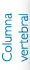
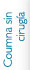
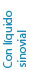

Tratamiento de Osteoporosis
Este esta enfocado a pacientes mayores de 50 años con reporte de osteopenia u osteoporosis, así como también en mujeres quienes han tenido una menopausia prematura o que les han practicado histerectomía a temprana edad, por tal razón, el uso de esta novedoso tratamiento es con la finalidad de fortalecer la resistencia de los huesos, disminuyendo con esto la alta incidencia de fracturas, así mismo, para pacientes con antecedente de dolor no incapacitante, continuo en la espalda (entre las escapulas), es muy posible que se deba a este padecimiento ya que pueden desarrollar microfracturas por fatiga, que inclusive no son tan valorable en las radiografías de control, pero para esto...
la Densitometría de columna y cadera tiene relevante interés, al ser un estudio con mucho más precisión para determinar el grado de descalcificación que se presenta y recuerde que la toma de Calcio vía oral no se fijara si no se considera el medicamento necesario para la buena penetración y utilización de este mineral, sin tener el riesgo de desarrollar cálculos en las vías urinarias o calcificaciones en rodillas.